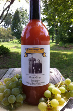
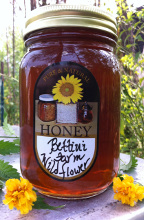

Order
Now selling and shipping our delicious farm products!
336-255-2386
To place your order, call farmer Randy Bettini.
Grape Cider

A local favorite, our one-of-a-kind grape cider has a delightful fruity flavor with crisp finish. Delicious served warm or chilled.
$7.00 per 25.4 fl. oz. bottle.
Grape Jelly
Our delicious white grape jelly pairs well with crackers and cheese, or try it on a PB&J for an unique and unbeatable flavor.
$5.00 per 16 oz. jar
Honey

Sweet and delicious in tea, on waffles, or by the spoonful! Seasonal flavors include grape.
$12.00 per pint jar
Seasonal Produce Availability
|
|
About
We are a third generation Italian-American family farm, located in the Piedmont of North Carolina. We produce Italian Heirloom products, using seeds and plants representative of Northern Italy, the Bettini Family ancestral homeland.
We practice sustainable farming which means we do not use chemicals. The end result is fresh, seasonal crops, sold directly from our Certified Roadside Farm Market and grape vineyard, and we also deliver to restaurants and are happy to email and let you know what's in season.
Our farm market has great views of the historical Southern Railway, built during the Civil War to connect Richmond and Atlanta; this railroad has been travelled by Presidents, Generals and WWII soldiers from Greensboro's own, historic Overseas Replacement Depot (ORD). The railroad has been a big part of the Bettini heritage; Bettini men have worked for the railroad for generations, come by we will tell you historical stories of this stretch of rail. Directions to our roadside farm market and Rail Fan overlook can be found at NC Farm Fresh.
Our specialty crop is Shiitake and Oyster Mushrooms, grown with guidance of scientists and Cooperative Extension Agents from local universities. If you are curious, we will be happy to teach you the art of mushroom cultivation in a workshop. We are charter members of the NC Mushroom Grower's Association.
Our newest products are delicious, healthy grape cider (non-alcoholic) we call, 'Great Grape Bettini'. And we sell several varieties of grape jellies and jam, 'Niagara Jelly' (blush), 'Reliance Jam' (red) and 'Campbell Early Jelly' (purple), which is grandfather's heirloom grape growing on the farm for more than 70 years. We offer "pick-your-own grapes" to folks who want to experience a bit of Italy harvesting the grapes in a peaceful setting.
Local honey is another one of our specialty products. We sell pints of honey, and, upon request, can make a very delicious 'honey sampler' consisting of several different varietal honeys. Honey bees are very important for pollinating crops so we keep at least one hive and plant sunflowers for their benefit; we are certified beekeepers, and support the Guilford County Beekeepers Association.
Other seasonal crops on our farm include Cherry Tomatoes (our restaurant specialty), Italian heirloom tomatoes, lettuces, zucchini, and basil herb, also traditional southern row crops of potatoes, and greens. Other heirlooms include fruits of pears, persimmons and mulberries, which were planted by our beloved grandparents, Francisco 'Frank' and Lillie Bettini, staples on the farm they started in 1918, and raised their children.
The Bettini Farm
2830 Lees Chapel Road
Browns Summit, NC 27214
336-255-2386
Open every day. Please call ahead with your order or stop by to browse.
|
{kind=link}
{kind=link}
{kind=link}
{kind=link}
{kind=link}
{kind=link}